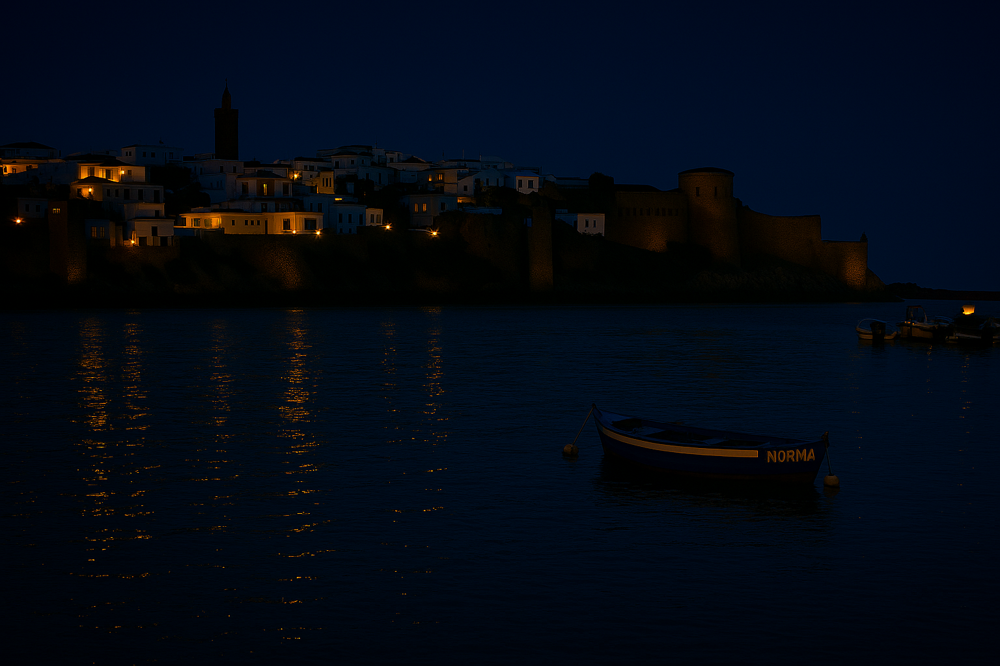
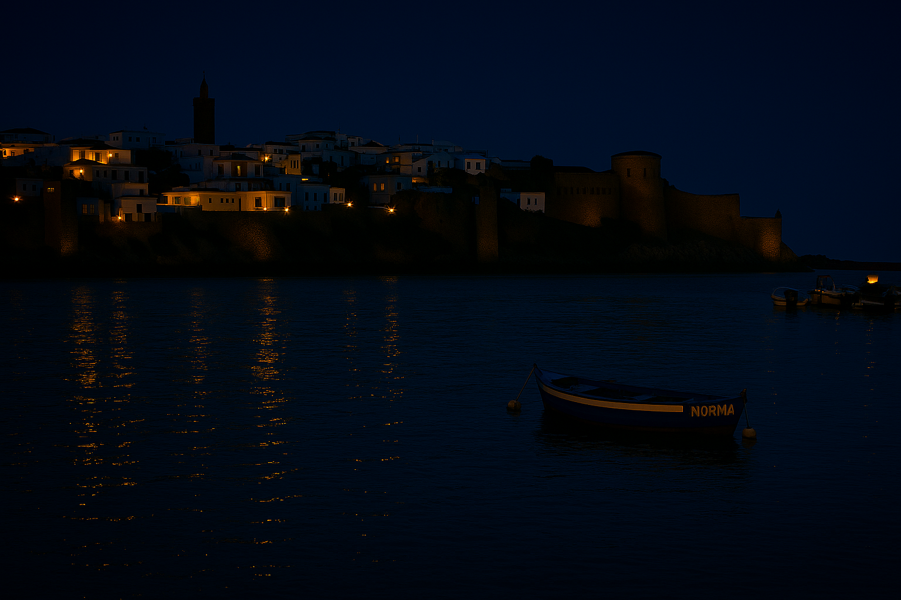

Voor onze goede doelenactie hebben wij samen besloten om Marokko te ondersteunen omdat we ons betrokken voelden bij de sociale en economische uitdagingen in dat land; toen één van onze teamleden afwezig was, heeft de andere tijdelijk de keuzes verder uitgewerkt zodat we geen tijd verloren, en uiteindelijk hebben we in overleg gekozen door te stemmen en te discussiëren, waarbij iedereen zijn argumenten kon geven over waarom Marokko een goed doel zou zijn, waarna we uitgebreid onderzoek zijn gaan doen naar de situatie in Marokko door betrouwbare websites, nieuwsartikelen en officiële rapporten te raadplegen, waarbij we de taken verdeelden zodat de één zich richtte op de leefomstandigheden van kinderen en gezinnen en de ander op onderwijs en gezondheidszorg, zodat we een compleet beeld kregen van de gebieden waar hulp het meest nodig was, en op basis van dit onderzoek hebben we besloten dat ons specifieke doel het verbeteren van de toegang tot schoon drinkwater voor kinderen in dorpen rondom steden in Marokko zou zijn, een keuze die tot stand kwam door verschillende projecten te vergelijken en te overleggen, waarbij we prioriteit gaven aan directe impact en haalbaarheid binnen onze tijd en middelen, en vervolgens besloten we dat onze actie een combinatie zou zijn van een inzamelingsactie op school en een online campagne via social media, en hoewel de uitvoering grotendeels soepel verliep, merkten we dat de planning beter afgestemd had kunnen worden omdat sommige taken last-minute vertraging opliepen, maar ondanks dit hebben we veel geleerd over samenwerking, communicatie en het doen van onderzoek, en volgens mijn projectpartner maakte vooral het zien van het enthousiasme van de mensen die we hebben bereikt in onze actie in Marokko indruk, en het besef dat zelfs kleine acties een groot verschil kunnen maken bleef bij ons beiden hangen als het belangrijkste inzicht, waardoor dit project niet alleen een succes was voor het goede doel, maar ook een waardevolle ervaring voor ons als team waarin we onze vaardigheden hebben verbeterd en het belang van goede planning, overleg en verantwoordelijkheid hebben ingezien.
 
